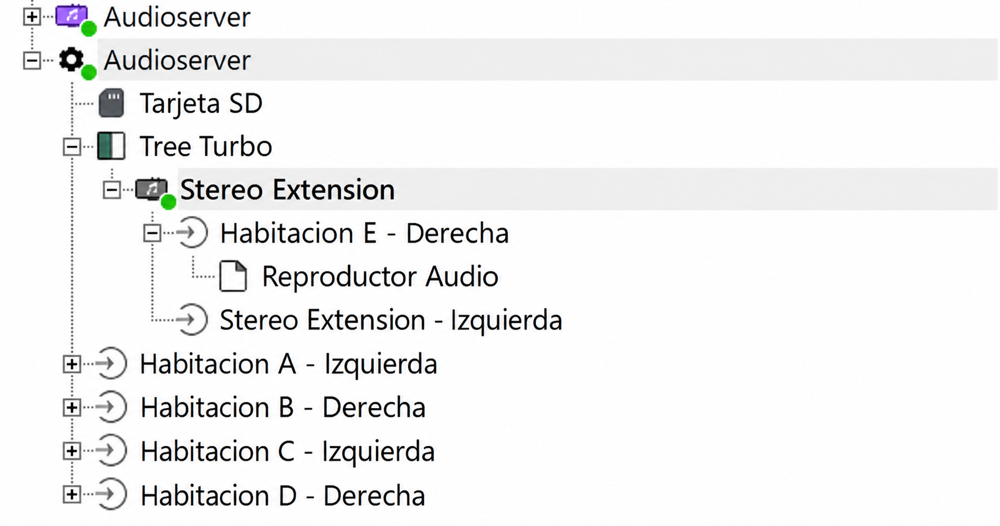
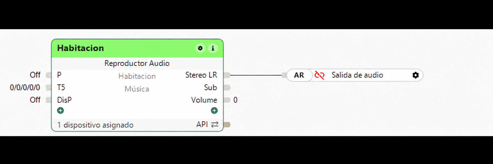

Guía práctica: tu primera habitación con AudioDek
Para una instalación nueva de LoxBerry 4.0 en x86_64. Sigue los pasos en orden y empieza con una sola habitación. AudioDek te ayuda a asignar reproductores y recuperar cambios; la reproducción la realiza Sonn y el control diario queda en la app Loxone.
1. Reúne lo necesario
- Un LoxBerry 4.0 en un PC o máquina virtual x86_64. Esta edición de AudioDek no es un paquete para instalar en un LoxBerry ARM.
- Un Miniserver accesible y Loxone Config, con permiso para guardar su configuración.
- Audioserver4Home y Sonn 4.0.0-beta.19, la versión examinada para esta edición. No des por compatible otra versión sin comprobarla.
- Para la primera habitación: una Raspberry Pi compatible con piCorePlayer, tarjeta microSD, alimentación, red y salida de audio adecuada (por ejemplo DAC USB), amplificador y altavoces según tu montaje.
- Los equipos deben poder comunicarse en tu red. Para empezar, conecta por Ethernet.
Anota tres direcciones diferentes: IP de LoxBerry/Sonn, IP del Miniserver e IP del reproductor. Cada equipo debe tener su propia dirección. Puedes consultarlas en la lista de dispositivos de tu router; una reserva DHCP ayuda a mantenerlas.
AudioDek no instala Sonn, no graba tarjetas piCorePlayer ni crea bloques en Loxone Config. Su asistente te indica qué hacer en cada aplicación.
2. Prepara Sonn e instala AudioDek
- En la gestión de plugins de LoxBerry, instala Audioserver4Home siguiendo su documentación. Comprueba que Sonn esté arrancado y revisa la versión que ejecuta. No actualices ni cambies de versión a ciegas si ya tienes un sistema funcionando.
- Abre la administración de Sonn desde Audioserver4Home o entra en
http://IP_DE_LOXBERRY:7090, sustituyendo el texto por tu dirección real. - Completa la preparación inicial y crea la cuenta administradora si Sonn te lo pide. Conserva sus credenciales.
- Instala el ZIP de AudioDek desde Plugins de LoxBerry y abre su panel.
- Pulsa Actualizar / Redetectar. En Diagnóstico guiado deben aparecer configuración legible y Sonn en marcha. En una instalación todavía sin zonas es normal que no aparezcan habitaciones.
Antes de seguir: debes poder abrir Sonn y AudioDek. Si falta la configuración o Sonn está detenido, resuelve primero ese punto en Audioserver4Home.
Documentación: Audioserver4Home y preparación inicial de Sonn.
3. Crea la primera habitación en Loxone Config
- Guarda una copia de tu proyecto de Loxone Config antes de modificarlo.
- En Sonn, entra en Zones / Zonas y elige la integración con Loxone (Loxone integrated). Consulta allí el host y el número de serie que Sonn proporciona.
- En Loxone Config, incorpora el Audioserver usando esos datos. La dirección es la del servidor Sonn; el número de serie es el que muestra Sonn.
- Crea un bloque Reproductor Audio / Audio Player, dale un nombre claro (por ejemplo Cocina), asígnalo a su habitación y vincúlalo a una salida disponible del Audioserver.
- Envía la configuración al Miniserver. Si el emparejamiento inicial requiere reiniciarlo, hazlo cuando puedas interrumpir su funcionamiento, siguiendo la documentación de Sonn.
- Vuelve a AudioDek y pulsa Actualizar / Redetectar. La habitación debe aparecer. Puede estar sin reproductor: lo asignarás después.
No copies un número de serie de otro montaje ni añadas otro Audioserver con la misma identidad para obtener más salidas. Si necesitas más capacidad, consulta la configuración de salidas y extensiones de Sonn antes de continuar. AudioDek no inventa números de zona ni modifica el proyecto de Loxone.
Los campos Referencia local de Miniservers de AudioDek son solo anotaciones; guardarlos no conecta Sonn con el Miniserver.
Referencia: integración Loxone de Sonn y ayuda de emparejamiento. Los nombres de los menús pueden variar según la versión y el idioma.
Vista general del Audioserver y sus habitaciones

Cómo leer el árbol: las habitaciones A a D cuelgan de las salidas directas del Audioserver. La habitación E aparece bajo Tree Turbo → Stereo Extension → salida derecha → Reproductor Audio. Izquierda y Derecha son canales de Loxone; no identifican la IP ni la MAC del reproductor. El otro Audioserver que aparece arriba pertenece al ejemplo y no es necesario para empezar.
La Stereo Extension de este ejemplo se usa con la emulación de Sonn. Si tienes una salida disponible, no necesitas añadir una extensión para la primera habitación. Para ampliar, comprueba el soporte y los identificadores que requiere tu versión de Sonn; no copies identidades de otro montaje ni dupliques un Audioserver con el mismo host y número de serie.
Conexión del bloque Reproductor Audio

Después de guardar y enviar al Miniserver, comprueba el emparejamiento en Loxone y que la zona aparezca en AudioDek. Loxone Config define el bloque y la salida; Sonn recibe la zona; AudioDek la asocia con el reproductor Squeezelite. Su IP y playerId son distintos del número de serie del Audioserver o de la extensión.
4. Prepara piCorePlayer para esa habitación
- Obtén piCorePlayer desde su sitio oficial y graba su imagen en una tarjeta microSD siguiendo su guía. Selecciona con cuidado la tarjeta que vas a grabar.
- Introduce la tarjeta en la Raspberry Pi, conecta Ethernet, el equipo de audio y la alimentación.
- Busca su IP en el router o en la pantalla de arranque y abre
http://IP_DEL_REPRODUCTOR. - Completa la preparación inicial de piCorePlayer. En Squeezelite Settings, configura la salida que realmente utilizas (USB, DAC u otra) y un nombre identificable, como Cocina. Guarda y reinicia Squeezelite o el equipo cuando lo solicite.
- Configura Squeezelite para conectarse a la IP de Sonn/LoxBerry. En piCorePlayer el campo puede llamarse servidor o LMS. Aquí Sonn hace de servidor para Squeezelite; no pongas la IP del Miniserver ni la de la propia Raspberry Pi. No necesitas instalar otro LMS para este recorrido.
- Comprueba que Squeezelite esté arrancado y vuelve a actualizar AudioDek.
La IP del reproductor identifica la Raspberry Pi. El playerId identifica su instancia Squeezelite y suele tener formato MAC. No uses como playerId el número de serie del Audioserver o de una Stereo Extension. Si eliges un equipo detectado, AudioDek obtiene ambos datos de Sonn.
Guía del fabricante del software: primeros pasos con piCorePlayer. Sus ejemplos usan LMS; en este montaje dirige el cliente Squeezelite a Sonn.
5. Selecciona el reproductor en AudioDek
- Mira Reproductores detectados por Sonn. Si aparece un aviso de acceso pendiente, despliega Acceso a Sonn e introduce una cuenta administradora de Sonn. Pulsa Conectar para consultar reproductores. AudioDek no guarda la contraseña; conserva la sesión de consulta.
- Comprueba nombre, IP y estado del equipo. La lista muestra clientes conocidos por Sonn, no todos los dispositivos de la red. Si aparece vacío, revisa el paso anterior.
- En Gestionar reproductor de una habitación, elige la habitación y la operación Asignar / cambiar reproductor.
- En Reproductor detectado, elige un equipo conectado y libre. Deja los campos manuales sin rellenar: AudioDek toma los datos de Sonn.
- Pulsa Revisar cambio de reproductor y verifica habitación, nombre, IP y playerId.
- Cuando todo sea correcto, escribe ASIGNAR y pulsa Confirmar cambio real. Se crea un backup previo y se reinicia Sonn; durante el cambio se interrumpe la reproducción.
- Comprueba el resultado mostrado y vuelve a actualizar el panel.
Alternativa manual: elige Introducir datos manualmente y completa nombre, IP IPv4 y playerId reales del reproductor. Cada reproductor debe tener una identidad única. AudioDek rechaza datos duplicados; no reutilices el de otra habitación.
Si todavía no tienes reproductor: deja la habitación pendiente. No introduzcas una IP o MAC ficticias.
6. Comprueba el sonido y añade las siguientes habitaciones
- En Sonn, prepara una fuente de música que puedas reproducir, como una emisora o tu biblioteca.
- Abre la app Loxone, entra en la habitación y reproduce esa fuente con un volumen moderado.
- Comprueba en los altavoces reproducción, pausa y volumen. Un estado Soloist activo o un reproductor conectado no garantiza por sí solo que la salida de audio y el amplificador funcionen.
- Si funciona, prepara la siguiente habitación repitiendo los pasos 3 a 6 con su propio reproductor.
Resultado esperado: la habitación existe en Loxone, AudioDek muestra su salida Squeezelite, Sonn ve el reproductor conectado y escuchas música en esa habitación.
7. Guarda un backup y conoce su alcance
En Backup transaccional, selecciona la habitación y pulsa Crear backup seguro de la habitación. Comprueba su entrada en el historial y usa Verificar / Previsualizar restauración para revisar la copia sin restaurar.
Esta copia guarda la configuración de todas las zonas, pero los datos Soloist solo de la habitación seleccionada. No es un backup completo de todos los datos de audio ni del proyecto del Miniserver. Conserva también tu copia de Loxone Config y una copia del sistema por los medios de LoxBerry.
Para restaurar de verdad hay que escribir RESTAURAR y confirmar. Se reinicia Sonn. La restauración recupera la configuración completa del momento del backup y puede revertir cambios posteriores en otras habitaciones. No la uses para comprobar que la lista se muestra bien.
Si algo no sale como esperabas
| Lo que ves | Qué comprobar |
|---|---|
| No hay habitaciones | Integración Loxone activa en Sonn, identidad correcta del Audioserver, bloque vinculado a una salida y configuración enviada al Miniserver. Después actualiza AudioDek. |
| Acceso a Sonn pendiente o caducado | Conecta desde Acceso a Sonn con una cuenta administradora válida de Sonn. Los datos guardados como referencia local del Miniserver no sirven como sesión de consulta. |
| No se detecta el reproductor | Alimentación, red, Squeezelite arrancado y dirigido a Sonn. Si funciona con otro servidor, cambia el servidor del cliente al que corresponde a este montaje. |
| El reproductor ya está asignado | Revisa qué habitación lo utiliza. Cada habitación necesita el reproductor que corresponda; no dupliques IP o playerId para evitar el aviso. |
| Soloist activo, pero no suena | Conexión del reproductor con Sonn, fuente reproducible, salida de audio en piCorePlayer, DAC, cables, amplificador, altavoces y volumen. |
| No hay permisos para aplicar | Revisa la instalación y los permisos con quien administra LoxBerry. No concedas permisos generales a todo el sistema ni cambies archivos a ciegas. |
| No se puede consultar Sonn en 7090 | Sonn en marcha y administración accesible. Esta edición consulta Sonn en el mismo LoxBerry y puerto local 7090; otro servidor o puerto requiere adaptar la configuración del plugin. |
Esta guía acompaña AudioDek v1.0.7. La lectura y la consulta no aplican cambios de audio; asignar, retirar o restaurar sí los aplica. La detección autenticada sigue pendiente de validación real en nuestro montaje. No se ha completado todavía una prueba de instalación desde cero.